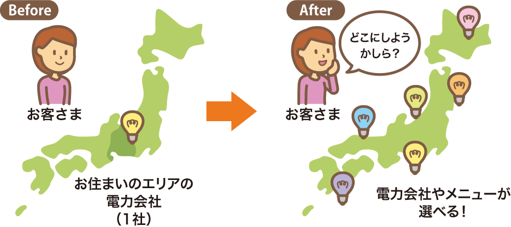
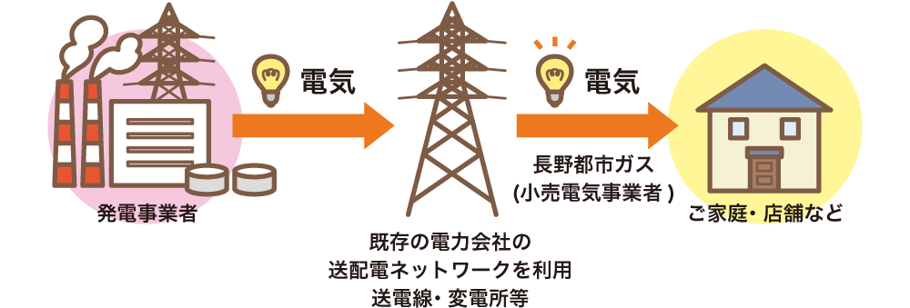

電力自由化で変わること
- 供給事業者
- お客さまが電力会社を選べます。
- 料金・サービス
- さまざまな料金プランやサービスを選べます。
- メーター
- 既存の電力会社から切り替えるとスマートメーターに変更となります。
電力自由化で変わらないこと
- 送配電設備
- 電線を新しく敷く必要はありません。
- 電気の品質
- 電気の品質は変わらないため、停電のリスクが高まることはありません。
- お客さま建物内の電気設備
- ブレーカーの変更など電気工事は必要ありません。
- 電気の保安
- これまで通り既存電力会社（中部電力）が実施します。
2016年4月までは、電力の購入先は地域ごとに電力会社が決められていましたが、これからは電力会社や電気料金プランを自由に選ぶことができます。

電気の品質・信頼性について
長野都市ガスの電気は、一般送配電事業者（中部電力等）の送配電設備を使ってお客さまに届けられます。電気の品質や信頼性はまったく変わりません。

スマートメーターについて
電気のご使用量を自動的に検針したり、時間帯別の使用量を計測してしたりできる電気メーターです。
長野都市ガスでは、このメーターを活用して、ウェブ会員サービス「My nagano toshi gas」（マイ ナガノトシガス）で、省エネに役立つ「電気使用量の見える化」などを提供します。